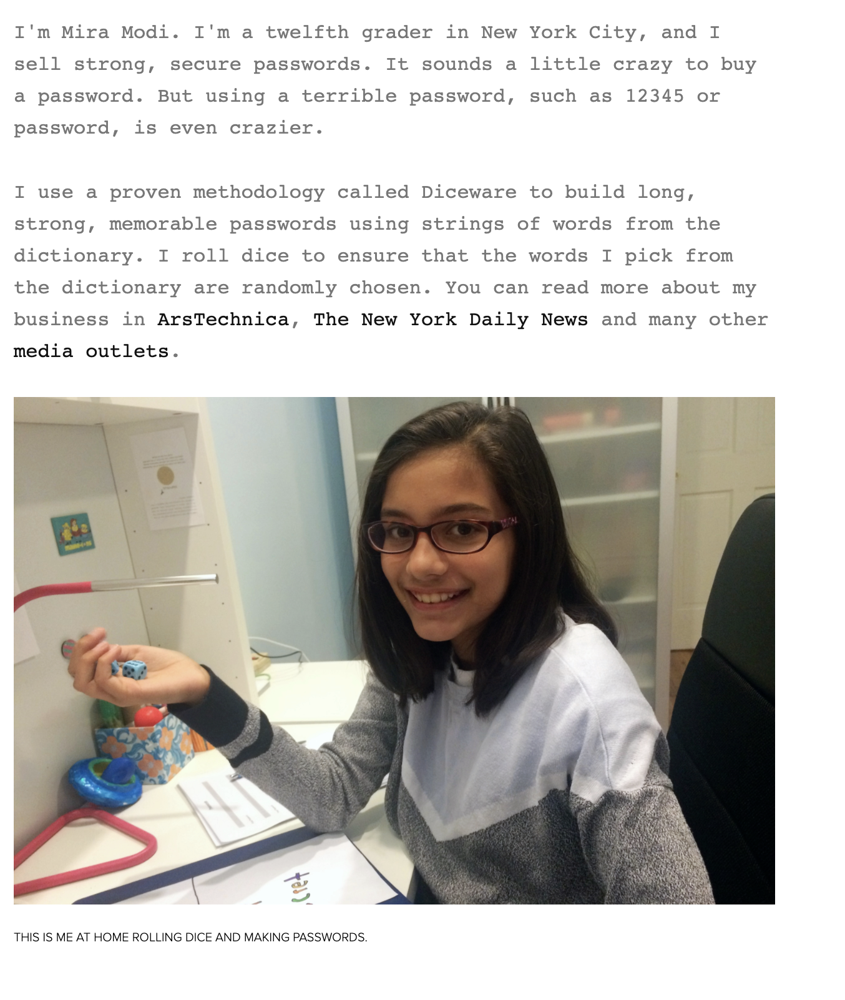

Sichere Passwörter - einfach zu merken
Marko Pohl
Ausbildung zum Schreiner
Seit 20 Jahren als Softwareentwickler tätig
Seit 6 Jahren bei der Polyas GmbH
Polyas ermöglicht verbindliche und sichere Online Wahlen, Nominierungen und Abstimmungen im Internet
Kunden: Kammern, Kirchen, Verbände, Vereine, Parteien ...
Sichere Passwörter - einfach zu merken
Ausbildungs Rahmenplan Nr.6 a)
Umsetzen, Integrieren und Prüfen von Maßnahmen zur IT-Sicherheit
und zum Datenschutz
Betriebliche Vorgaben und rechtliche
Regelungen einhalten
Through 20 Years of effort,
we've successfully trained everyone
to use passwords that are
hard for humans to remember,
but easy for computers to guess.
Durch 20 Jahre langes Bemühen
haben wir es erfolgreich geschafft
Passwörter zu benutzen,
die für Menschen schwierig zu merken,
aber für Computer einfach zu erraten sind.
Kurzes, komplexes Passwort
DCj9*qn8
Langes, einfaches Passwort
glukose bild puffer sydney hallo
Kurzes, komplexes Passwort
DCj9*qn8
| Möglichkeiten | 576 480 100 000 000 |
|---|---|
| Entropie | 49 bits |
Was ist Entropie?
Entropie beschreibt die „Stärke“ eines Passwortes.
Ein Kennwort mit hoher Entropie kann schwieriger zu knacken sein.
Vereinfacht gesagt ordnet die Entropie jedem Zeichen eines Passworts einen Informationsgehalt (Wert) in Abhängigkeit der möglichen Zeichen zu.
Beispiel
01101010
| Möglichkeiten | 255 |
|---|---|
| Entropie | 8 bit |
Kurzes, komplexes Passwort
DCj9*qn8
| Möglichkeiten | 576 480 100 000 000 |
|---|---|
| Entropie | 49 bit |
Sieht sicher aus...
Bruteforce Hack
Bruteforce = Beliebig schnelles Ausprobieren aller Möglichkeiten
| Moderner PC | ~ 95 Jahre |
|---|---|
| Supercomputer, Botnet | ~ 4 Stunden |
Langes, einfaches Passwort
glukose bild puffer sydney hallo
| Möglichkeiten | ~ 1.90e+45 |
|---|---|
| Entropie | ~ 150.41 bit |
Bruteforce Hack
| Moderner PC | ~ 2.7e+31 Jahre |
|---|---|
| Supercomputer, Botnet | ~ 1.2e+26 Jahre |
| Lebenserwartung der Sonne | ~ 7e+9 Jahre |
|---|
Vorteile eines langen und nicht komplexen Passwortes
- Schwer per Bruteforce zu knacken
-
Leichter zu merken.
- Reale Wörter
- Eselsbrücken gut möglich
Kann sich noch jemand erinnern?glukose bild puffer sydney hallo -
Leichter zu tippen.
- Keine Sonderzeichen
- Nur Kleinbuchstaben
- Klare Schreibweise
Wie erstelle ich ein solches Passwort?
Mit der Diceware Methode
Erfunden 1995 von Arnold Reinhold
Man braucht eine Wortliste:

eine lange Wortliste ... 7776 Zeilen...
Und Zufall!
Besser gesagt eine Zufallszahl zwischen 11111 und 66666
ohne Nullen
Wie erzeuge ich die?

Ablauf
5 mal mit 5 Würfeln würfeln und jeweils das entsprechende Wort in der Liste nachschauen
[1] [3] [6] [6] [1] = aussicht
[6] [1] [1] [3] [2] = tatsache
[2] [1] [1] [6] [2] = bunt
[3] [1] [5] [3] [2] = geruch
[2] [1] [4] [3] [2] = computerFertig!
Mittlerweile werden für eine sichere Passphrase 6 Wörter oder 5 Wörter plus ein frei positioniertes Zeichen empfohlen.
20 Wörter um ein sicheres Passwort für die Post Quantencomputer Ära zu erstellen.
Alternative
Wem das zu umständlich ist, kann auch bei Mira Modi ein Paswort bestellen.
dicewarepasswords.com , $10 inkl. Versand
Vielen Dank!
Für Zeit und Aufmerksamkeit.
Außerdem danke ich: